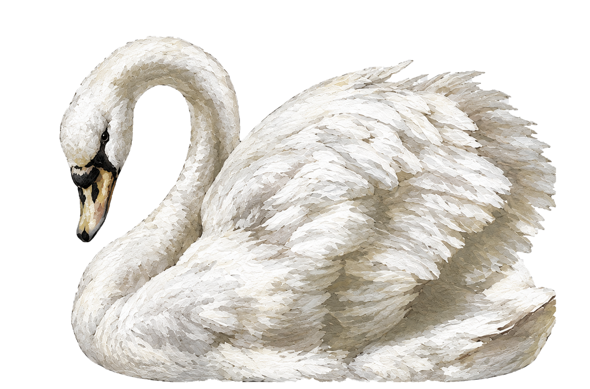

← Retour à l'accueilIci, pas de description académique ni de normes. Mon site est un espace purement visuel, un journal intime numérique façon cabinet de curiosités qui regroupe mes projets passés, en cours ou terminés afin de me pousser à aller plus loin.
J'espère que vous apprécierez cette expérience.